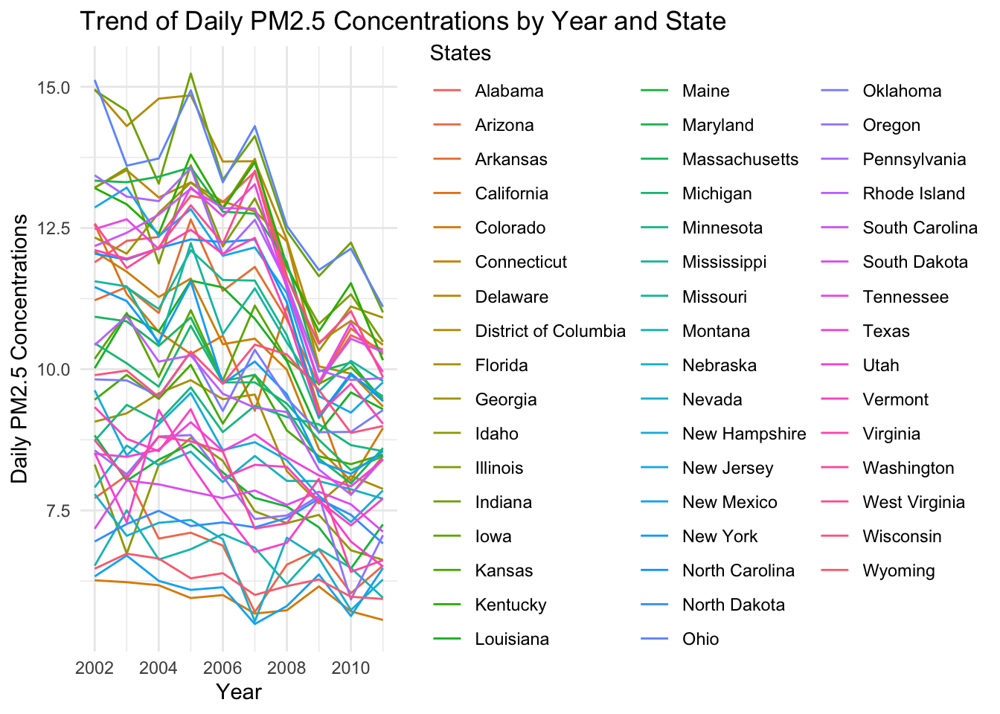
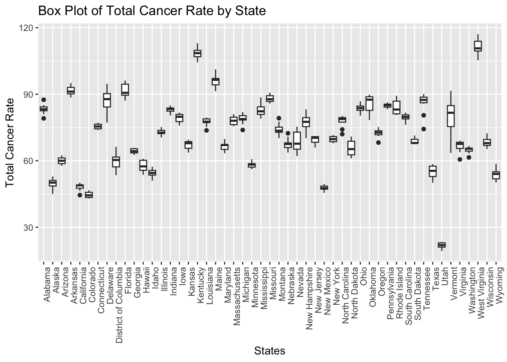

Code
library(dplyr)
library(ggplot2)
library(sf)
library(choroplethr)
library(parcoords)
library(gridExtra)
library(plotly)Load required libraries
library(dplyr)
library(ggplot2)
library(sf)
library(choroplethr)
library(parcoords)
library(gridExtra)
library(plotly)Merge cancer, PM2.5, and Ozone data by year and states.
cancer <- read.csv('cancer.csv')
#unique(cancer$Leading.Cancer.Sites)
cancer$Count <- as.numeric(as.character(cancer$Count))
cancer$Population <- as.numeric(cancer$Population)
cancer <- na.omit(cancer)
lung_df = cancer[cancer['Leading.Cancer.Sites'] == 'Lung and Bronchus',]
pm <- read.csv("https://data.cdc.gov/resource/7vdq-ztk9.csv?$query=SELECT%0A%20%20%60year%60%2C%0A%20%20%60statefips%60%2C%0A%20%20max(%60pm25_max_pred%60)%20AS%20%60max_pm25_max_pred%60%2C%0A%20%20avg(%60pm25_pop_pred%60)%20AS%20%60avg_pm25_pop_pred%60%0AGROUP%20BY%20%60year%60%2C%20%60statefips%60")
ozone <- read.csv("https://data.cdc.gov/resource/kmf5-t9yc.csv?$query=SELECT%0A%20%20%60year2%60%2C%0A%20%20%60statefips%60%2C%0A%20%20max(%60o3_max_pred%60)%20AS%20%60max_o3_max_pred%60%2C%0A%20%20avg(%60o3_pop_pred%60)%20AS%20%60avg_o3_pop_pred%60%0AGROUP%20BY%20%60year2%60%2C%20%60statefips%60")
pm$year <- as.numeric(pm$year)
ozone$year2 <- as.numeric(ozone$year2)
pm_df <- pm %>% filter(year >= 2002 & year <= 2011)
ozone_df <- ozone %>% filter(year2 >= 2002 & year2 <= 2011)
pm_df <- pm_df[,c('year','statefips','avg_pm25_pop_pred')]
ozone_df <- ozone_df[,c('year2','statefips','avg_o3_pop_pred')]
cancer_df <- lung_df[,c('States.Code','States',"Year","Count","Population")]
cancer_df <- cancer_df %>%
group_by(States, Year) %>%
mutate(total_cancer_rate = sum(Count, na.rm = TRUE)/sum(Population, na.rm = TRUE) * 100000) %>%
ungroup()
cancer_df <- cancer_df[,c('States.Code','States','Year','total_cancer_rate')]
cancer_df$total_cancer_rate <- round(cancer_df$total_cancer_rate, 1)
cancer_df <- cancer_df %>% distinct()
merged_data <- cancer_df %>%
inner_join(pm_df, by = c("States.Code" = "statefips", "Year" = "year"))
merged_data <- merged_data %>%
inner_join(ozone_df, by = c("States.Code" = "statefips", "Year" = "year2"))
merged_data$States <- as.character(merged_data$States)
write.csv(merged_data, "merged_DATA.csv")
head(merged_data)# A tibble: 6 × 6
States.Code States Year total_cancer_rate avg_pm25_pop_pred avg_o3_pop_pred
<int> <chr> <dbl> <dbl> <dbl> <dbl>
1 1 Alabama 2002 81 11.9 40.8
2 1 Alabama 2003 79.1 12.3 39.7
3 1 Alabama 2004 84 12.3 39.6
4 1 Alabama 2005 82.5 13.1 41.5
5 1 Alabama 2006 82.7 13.0 44.0
6 1 Alabama 2007 82.8 13.5 44.0We want to identify long-term increases or decreases in the lung and bronchus cancer incidences for each state in US. The following line plots show that lung and bronchus cancer counts among 100k people is stable from 2001 to 2010 for all states.
result_by_states <- cancer_df %>%
group_by(States, Year) %>%
summarize(total_cancer_rate = mean(total_cancer_rate, na.rm = TRUE))`summarise()` has grouped output by 'States'. You can override using the
`.groups` argument.ggplot(result_by_states, aes(x = Year, y = total_cancer_rate, group = States, color = States)) +
geom_line() +
labs(title = "Trend of Cancer Counts by Year and State",
x = "Year",
y = "Total Cancer Rate") +
theme_minimal()After taking the average of cancer counts among 100k people for all states, we discovered the lung and bronchus cancer counts is first going up and then decrease.
result_total <- cancer_df %>%
group_by(Year) %>%
summarize(total_cancer_rate = mean(total_cancer_rate, na.rm = TRUE))
ggplot(result_total, aes(x = Year, y = total_cancer_rate)) +
geom_point() +
labs(title = "Trend of Average Cancer Rate by Year",
x = "Year",
y = "Total Cancer Rate") +
theme_minimal() +
geom_smooth(method = "loess", span = .7, se = FALSE)`geom_smooth()` using formula = 'y ~ x'
We want to identify long-term increases or decreases in daily PM2.5 concentrations from 2001 to 2016 for each state in US. The following line plots show that daily PM2.5 concentrations is generally decreasing for all states.
ggplot(merged_data, aes(x = Year, y = avg_pm25_pop_pred, color = States)) +
geom_line() +
labs(title = "Trend of Daily PM2.5 Concentrations by Year and State",
x = "Year",
y = "Daily PM2.5 Concentrations") +
theme_minimal()
avg_pm_per_year <- pm %>%
group_by(year) %>%
summarise(average_pm25 = mean(avg_pm25_pop_pred))
g <- ggplot(avg_pm_per_year, aes(year, average_pm25)) +
geom_point() +
ggtitle("Average Daily PM2.5 Concentrations in US, 2001-2016") +
xlab("2001-2016")
g + geom_smooth(method = "loess", span = .5, se = FALSE)`geom_smooth()` using formula = 'y ~ x'
We want to identify long-term increases or decreases in daily Ozone concentrations from 2001 to 2016 for each state in US. The following line plots show no pattern for increasing or decreasing in daily Ozone concentrations for all states. The changes of ozone concentration are subtle.
ggplot(merged_data, aes(x = Year, y = avg_o3_pop_pred, color = States)) +
geom_line() +
labs(title = "Trend of Daily PM2.5 Concentrations by Year and State",
x = "Year",
y = "Daily Ozone Concentrations") +
theme_minimal()
avg_o3_per_year <- ozone %>%
group_by(year2) %>%
summarise(average_o3 = mean(avg_o3_pop_pred))
g <- ggplot(avg_o3_per_year, aes(year2, average_o3)) +
geom_point() +
ggtitle("Average Daily Ozone Concentration in US, 2001-2016") +
xlab("2001-2016")
g + geom_smooth(method = "loess", span = .5, se = FALSE)`geom_smooth()` using formula = 'y ~ x'
We want to identify some geographical patterns of lung and bronchus cancer incidences for each state in US. The following choropleth maps use color to indicate the value of cancer incidences within each state. Deep color indicates more cancer incidences. Top states with higher cancer incidences are the same from 2001 to 2011, includes Maine, Kentucky, and West Virginia.
result_by_states$region <- result_by_states$States
result_by_states$value <- result_by_states$total_cancer_rate
#result_by_states<-result_by_states[,c('region','value','Year')]
result_by_states <- na.omit(result_by_states)
result_by_states <- result_by_states %>%
transmute(region = tolower(`region`), value = value, year = Year)# ggplot2 Boxplot
ggplot(result_by_states, aes(x = States, y = value)) +
geom_boxplot() +
xlab("States") +
ylab("Total Cancer Rate") +
ggtitle("Box Plot of Total Cancer Rate by State") +
theme(axis.text.x = element_text(angle = 90, hjust = 1)) # Rotate x-axis labels if needed
We want to identify some geographical patterns of PM2.5 concentrations for each state in US. The following choropleth maps use color to indicate the value of population weighted averaged PM2.5 concentrations in μg/m3 for each state. Deep color indicates higher PM2.5 concentrations. Ohio and Indiana have leading PM2.5 concentrations every year from 2001 to 2011. Population weighted average PM2.5 concentrations in alaska and hawaii are not included in the original dataset so they are black on the map.
spatial_pm <- merged_data %>%
transmute(region = tolower(States), value = avg_pm25_pop_pred, year = Year)
for(year in unique(spatial_pm$year)) {
df_year <- spatial_pm[spatial_pm$year == year, ]
df_year$value <- as.numeric(df_year$value)
map <- state_choropleth(df_year,
title = paste("Daily Average PM2.5 Concentrations All States, ", year),
legend = "Daily Average PM2.5")
print(map)
}


We want to identify some geographical patterns of Ozone concentrations for each state in US. The following choropleth maps use color to indicate the value of population weighted averaged and yearly averaged 8-hour average ozone concentration in parts per billion within 3 meters of the surface of the earth for each state. Deep color indicates higher Ozone concentrations. Utah, Arizona, and New Mexico have leading PM2.5 concentrations every year from 2001 to 2011. Population weighted average Ozone concentrations in alaska and hawaii are not included in the original dataset so they are black on the map.
spatial_o3 <- merged_data %>%
transmute(region = tolower(States), value = avg_o3_pop_pred, year = Year)
for(year in unique(spatial_o3$year)) {
df_year <- spatial_o3[spatial_o3$year == year, ]
df_year$value <- as.numeric(df_year$value)
map <- state_choropleth(df_year,
title = paste("Daily Ozone Concentrations All States, ", year),
legend = "Daily Average PM2.5")
print(map)
}


To explore how one variable changes with respect to the other between lung and bronchus cancer rates and PM2.5/Ozone concentrations, we used scatter plot, pearson test, and interactive parallel coordinate plot.
The following line of best fit in scatter plot shows that lung and bronchus cancer rates and PM2.5 are positively correlated, for most points with higher PM2.5 concentration, it also has higher cancer rate. There are some outliers with low cancer rates but diverse PM2.5 concentration added noise to the fitted line. To know details about those points, we employed interactive scatter plot and discovered that they all belong to Utah. While the average PM2.5 concentration in Utah changed overtime, lung and bronchus cancer rate is consistantly low.
ggplot(merged_data, aes(x = avg_pm25_pop_pred, y = total_cancer_rate)) +
geom_point() +
geom_smooth(method = "lm", se = FALSE) +
labs(title = "Scatter Plot of Cancer Counts vs PM2.5", x = "Average PM2.5", y = "Total Cancer Rate")`geom_smooth()` using formula = 'y ~ x'
plot_ly(merged_data, x = ~avg_pm25_pop_pred, y = ~total_cancer_rate,
color = ~as.factor(Year), text= ~States,
hoverinfo = 'text') No trace type specified:
Based on info supplied, a 'scatter' trace seems appropriate.
Read more about this trace type -> https://plotly.com/r/reference/#scatterNo scatter mode specifed:
Setting the mode to markers
Read more about this attribute -> https://plotly.com/r/reference/#scatter-modeThe following line of best fit in scatter plot shows barely any correlation between lung and bronchus cancer rates and ozone concentration, for points with high ozone concentration, lung and bronchus cancer rate can be both high or low. There are some outliers that have high ozone concentration level but low cancer rate. The fitted line is slightly downward because of those outliers. To know details about those points, we employed interactive scatter plot and again discovered that they all belong to Utah. While the average ozone concentration in Utah is consistently high comparing to other states, it also has very low lung cancer rates comparing to other states.
ggplot(merged_data, aes(x = avg_o3_pop_pred, y = total_cancer_rate)) +
geom_point() +
geom_smooth(method = "lm", se = FALSE) +
labs(title = "Scatter Plot of Cancer Counts vs Ozone",
x = "Average Daily Ozone Concentration",
y = "Total Cancer Rate")`geom_smooth()` using formula = 'y ~ x'plot_ly(merged_data, x = ~avg_o3_pop_pred, y = ~total_cancer_rate,
color = ~as.factor(Year), text= ~States,
hoverinfo = 'text') No trace type specified:
Based on info supplied, a 'scatter' trace seems appropriate.
Read more about this trace type -> https://plotly.com/r/reference/#scatterNo scatter mode specifed:
Setting the mode to markers
Read more about this attribute -> https://plotly.com/r/reference/#scatter-modeThe Pearson correlation test provides a coefficient (r) that quantifies the strength and direction of the linear relationship between two continuous variables. For value close to 1, it indicates positive linear correlation. Based on our data, cancer rates and PM2.5 concentration has correlation 0.4470339. It could be higher without outliers. The p value is 2.2e-16, much smaller than 0.01, which highly suggests that true correlation between lung cancer and PM2.5 concentration is not 0.
correlation_test_pearson <- cor.test(merged_data$total_cancer_rate, merged_data$avg_pm25_pop_pred, method = "pearson")
print(correlation_test_pearson)
Pearson's product-moment correlation
data: merged_data$total_cancer_rate and merged_data$avg_pm25_pop_pred
t = 11.028, df = 487, p-value < 2.2e-16
alternative hypothesis: true correlation is not equal to 0
95 percent confidence interval:
0.3731532 0.5152807
sample estimates:
cor
0.4470339 Then we test the correlation between ozone and cancer rates. Based on our data, cancer rates and ozone concentration has correlation -0.2666176. It could be lower without outliers. The p value is 2.105e-09, much smaller than 0.01, which highly suggests that there is a negative correlation between lung cancer and ozone concentration. However, this finding is strange because ground-level ozone, is “bad” because it can trigger a variety of health problems. So intuitively, there shouldn’t exisit negative correlation between ozone concentration and people’s wellness.
correlation_test_pearson <- cor.test(merged_data$total_cancer_rate, merged_data$avg_o3_pop_pred, method = "pearson")
print(correlation_test_pearson)
Pearson's product-moment correlation
data: merged_data$total_cancer_rate and merged_data$avg_o3_pop_pred
t = -6.1047, df = 487, p-value = 2.105e-09
alternative hypothesis: true correlation is not equal to 0
95 percent confidence interval:
-0.3470842 -0.1822541
sample estimates:
cor
-0.2666176 The correlation between these variables might be clearer after we removing outliers. To identify outliers, we take at the parallel coordinate graph among cancer rate, PM2.5 concentration, and Ozone concentration. It’s not clear if PM2.5 and Ozone concentration are correlated as some data shows negative relationship and some shows positive. But it’s clear that Utah always has the lowest lung and bronchus cancer rate.
merged_data %>%
select(c("States","total_cancer_rate","avg_pm25_pop_pred","avg_o3_pop_pred")) %>%
arrange(merged_data) %>%
parcoords(rownames = FALSE,
brushMode = "1D-axes",
color = list(colorBy = "Region",
colorScale = "scaleOrdinal",
colorScheme = "schemeCategory10"),
alpha = 0.5,
withD3 = TRUE,
width = 770,
height = 600)From the graph above, we notice that there are some outliers states, here we using z-score and IQR methods to examine each state, and we notice that Utah, Kentucky, West Virginia are outliers. In the following interactive graph, we will see if removing these states from the data frame will change the regression line of total cancer rate and avergae pm2.5.
z_score <- function(x) {
(x - mean(x)) / sd(x)
}
# Calculate Z-score for each variable
merged_data$z_pm25 <- z_score(merged_data$avg_pm25_pop_pred)
merged_data$z_cancer_count <- z_score(merged_data$total_cancer_rate)
# Identify outliers (Z-score > 3 or < -3)
outliers_z <- subset(merged_data, abs(z_pm25) > 3 | abs(z_cancer_count) > 3)
iqr_pm25 <- IQR(merged_data$avg_pm25_pop_pred)
iqr_cancer_count <- IQR(merged_data$total_cancer_rate)
# Calculate the bounds
lower_bound_pm25 <- quantile(merged_data$avg_pm25_pop_pred, 0.25) - 1.5 * iqr_pm25
upper_bound_pm25 <- quantile(merged_data$avg_pm25_pop_pred, 0.75) + 1.5 * iqr_pm25
lower_bound_cancer_count <- quantile(merged_data$total_cancer_rate, 0.25) - 1.5 * iqr_cancer_count
upper_bound_cancer_count <- quantile(merged_data$total_cancer_rate, 0.75) + 1.5 * iqr_cancer_count
# Identify outliers
outliers_iqr <- subset(merged_data, avg_pm25_pop_pred < lower_bound_pm25 | avg_pm25_pop_pred > upper_bound_pm25 |
total_cancer_rate < lower_bound_cancer_count | total_cancer_rate > upper_bound_cancer_count)
combined_outliers <- unique(rbind(outliers_z, outliers_iqr))
print(unique(combined_outliers$States))[1] "Utah" "Kentucky" "West Virginia"For ozone concentration, we want to see if there is any difference after removing outliers, first we identify for outliers. We notice that Utah and Colorado are two outliers. After removing these states, the correlation become weaker, decreasing from -0.2666176 to -0.09481011. Also, the p-value is 0.04013, which is larger than alpha 0.01, so we cannot reject the null hypothesis. Thus, there is no association between total cancer rate and average ozone concentration.
filtered_df <- subset(merged_data, !(States %in% c("Utah","Colorado")))
correlation_test_pearson <- cor.test(filtered_df$total_cancer_rate, filtered_df$avg_o3_pop_pred, method = "pearson")
print(correlation_test_pearson)
Pearson's product-moment correlation
data: filtered_df$total_cancer_rate and filtered_df$avg_o3_pop_pred
t = -2.0581, df = 467, p-value = 0.04013
alternative hypothesis: true correlation is not equal to 0
95 percent confidence interval:
-0.183777371 -0.004302126
sample estimates:
cor
-0.09481011